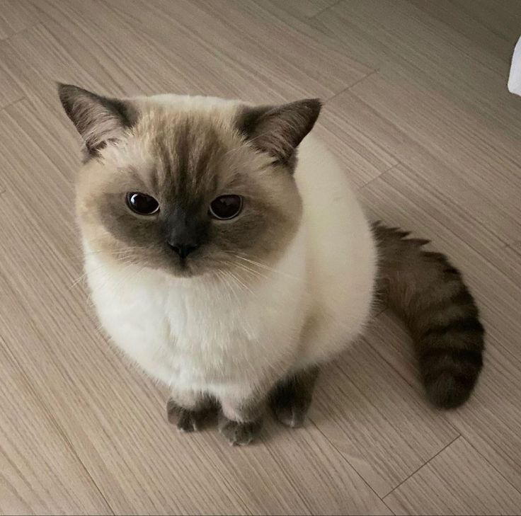
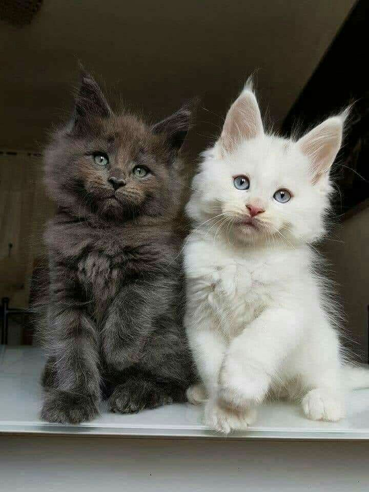
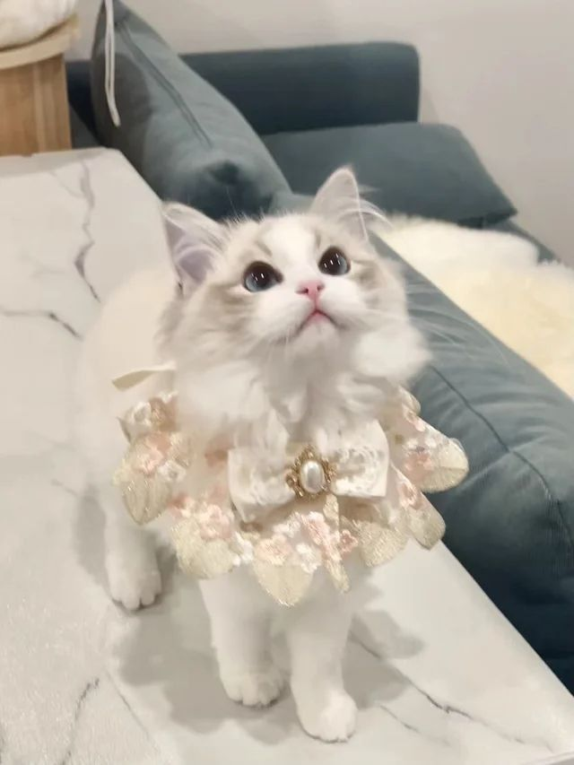
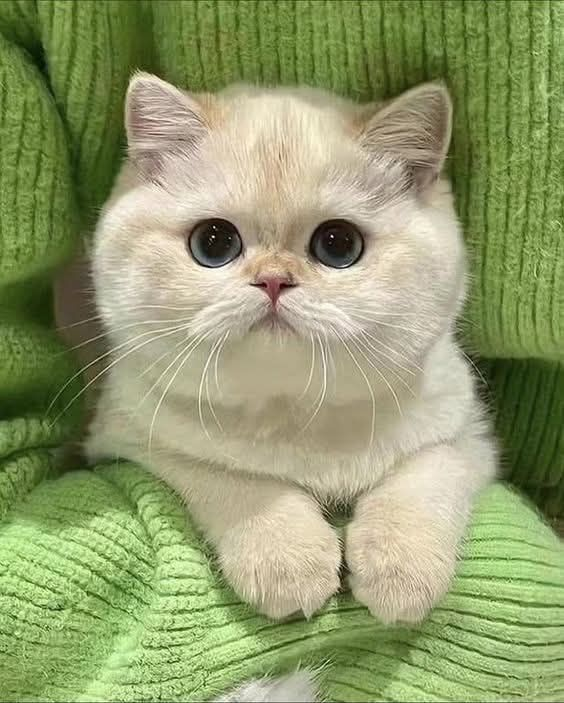

Here are some cute and popular cat breeds!!

Siamese cats are famous for their blue eyes and talkative personalities. They love attention and being around people.

Maine Coons are one of the biggest domestic cat breeds. They are very fluffy and very friendly.

Ragdoll cats are calm, soft and very affectionate. They often follow their owners around the house.

British Shorthair cats are easy going and fluffy. They enjoy relaxing and being around their owners.